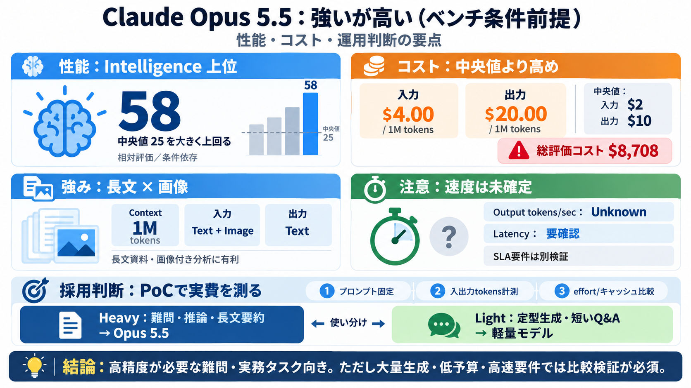

Claude Opus 4.8 (Adaptive Reasoning, Max Effort) vs GPT- ...
GPT-5.5 (high) is faster. GPT-5.5 (high) generates 92.4 tokens per second, compared with Claude Opus 4.8 (Adaptive Reaso…

GPT-5.5 (high) is faster. GPT-5.5 (high) generates 92.4 tokens per second, compared with Claude Opus 4.8 (Adaptive Reaso…
The latency bump at High is noticeable but usually acceptable. For workflows where quality directly affects outcomes — a…
Claude Opus 5 converts additional effort into better results more reliably than any earlier Opus model, so the effort le…
Based on our testing, we expect the classifiers to intervene around 85% less often than they do for Fable 5. In Claude.a…
If your team decides to use both models, a routing configuration with fallback logic keeps things reliable. Here is a mi…